無意間逛blog發現的去處，剛好要來個2天1夜的輕旅行就順道走走
黃金麥田的故鄉 台中大雅
每年的3月中旬～4月初是大雅小麥田收成之際
也真的夠巧！卡內家同一天也要去，這次沒有約好，哈哈 難得我們有口袋名單說
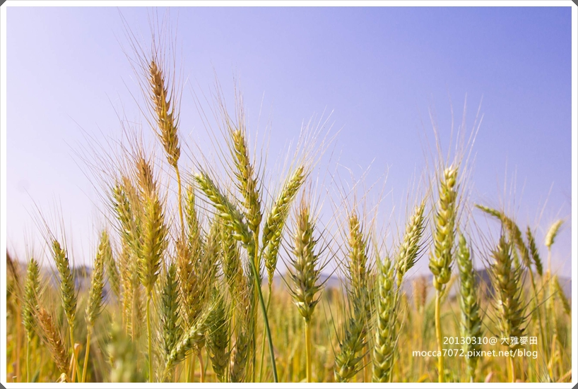
第一次走訪麥田，這塊小麥田還在由綠轉黃的階段
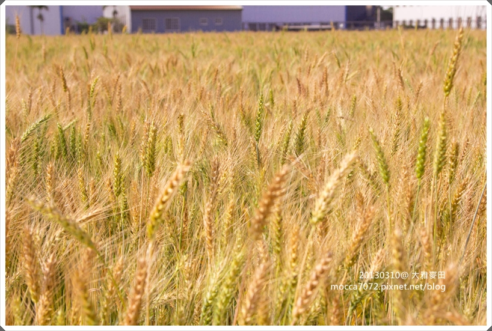
人潮蠻多的，我們到了之後才剛走了一批看起來像是攝影學會的，又來了一批
現在拿大砲已經不稀奇了，只要有這種花季，都會有大批拿大砲的人出沒
而且好多都是老人家，果然有錢又有閒？XD
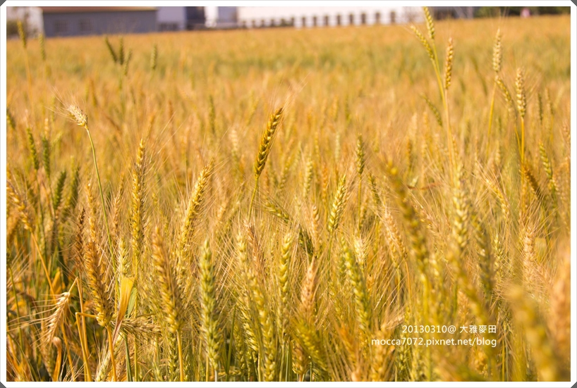
麥桿和結實累累的小麥，真可愛！
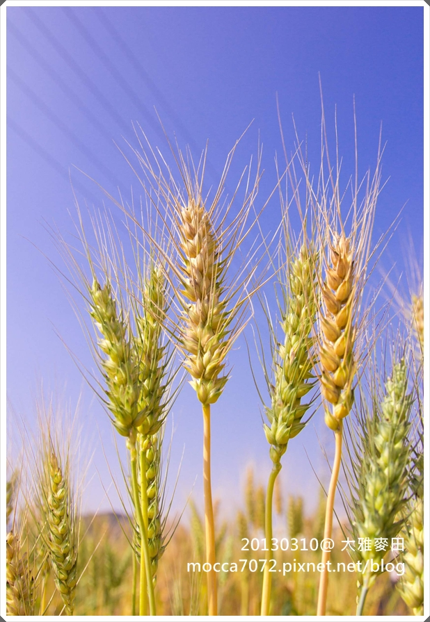
又是個補眼線的好陽光
坐在田梗上的阿卡卡被太陽照到眼睛都睜不開了
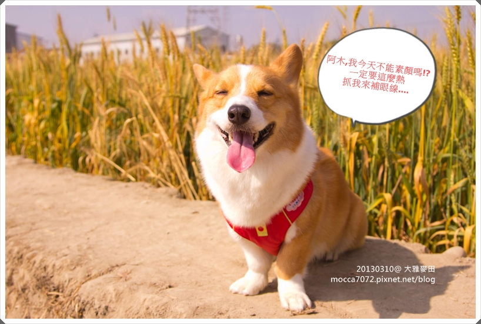
近距離聞聞看有沒有麥香
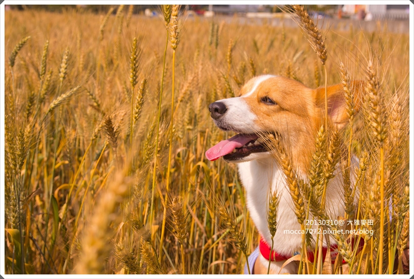
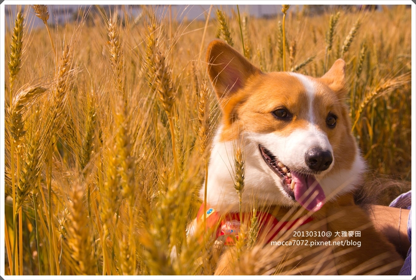
坐在田梗上實在太矮了，阿木啟動人肉起重機，借位拍照“金黃小麥卡“
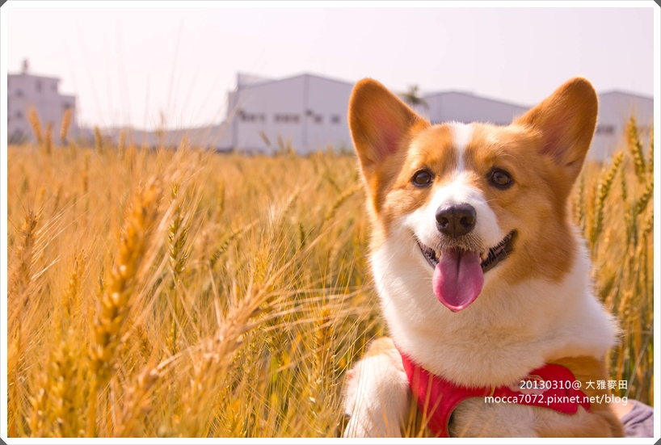
後面的遊客太多閃都閃不掉，不過淺景深的感覺看起好像後面有稻草人（？）XD
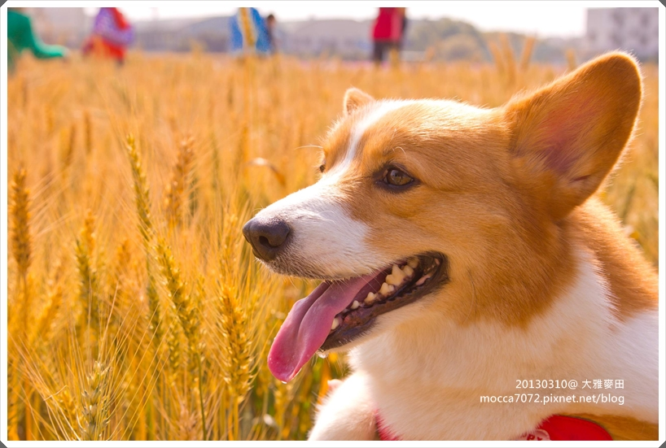
不行了......就算這子小身材保持的很好，還是重達10kg的小胖 
而且才拍個10分鐘，小麥卡已經熱的哈哈哈哈個不停 XD
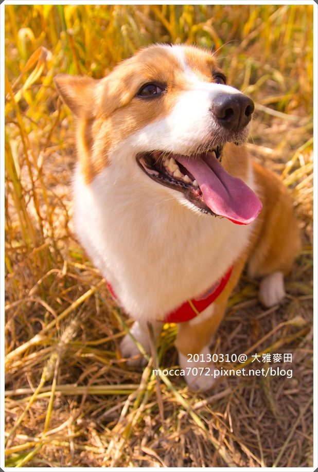
離開這區要去找卡內喝下午茶時，開車在麥田小徑間又發現一塊金黃色波浪
這裡好拍多了，重點是沒人！！
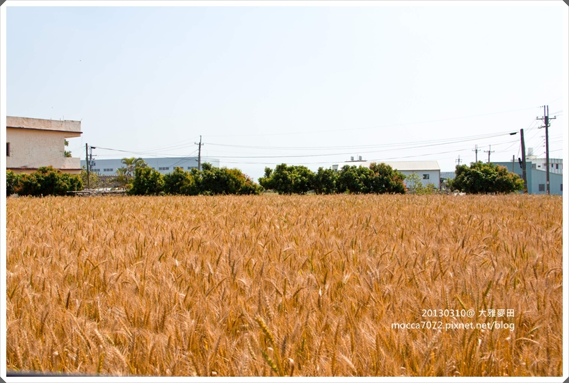
大雅這裡的小麥收割後會直接送往金門製作高樑酒
所以每塊田都是農夫賴以為生的作物，請不要隨意跑進田裡，踩壞的可都是麥農們的心血
誰說一定要埋在麥田裡才好拍，至少拍小狗真的很累，扛都扛死我惹......
想要去的朋友，可以先看看這篇文章 麥田的背後
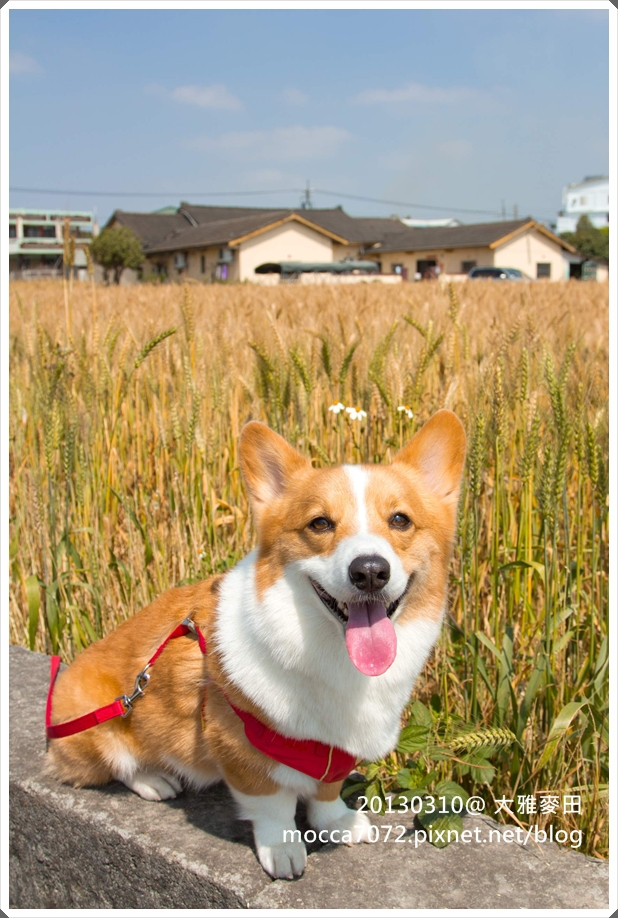
麥田變成我家小麥卡的保護色了，哈，還好有穿小紅內褲跳色（？）XDDDDD
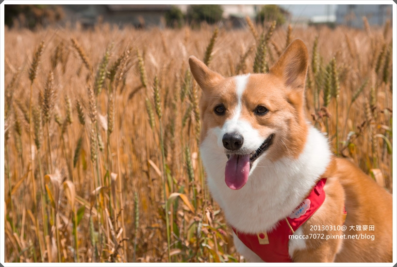
“耗呆“小麥卡 
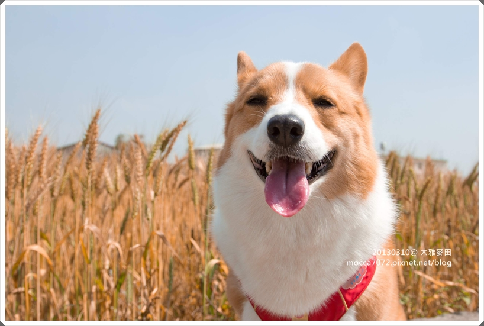
麥根小學堂
是由社區“麥之鄉產業發展協會“將一棟廢棄校舍改建
這裡週末會安排一些DIY課程、農夫市集及麥鄉輕旅行活動，讓民眾品嚐農村風味
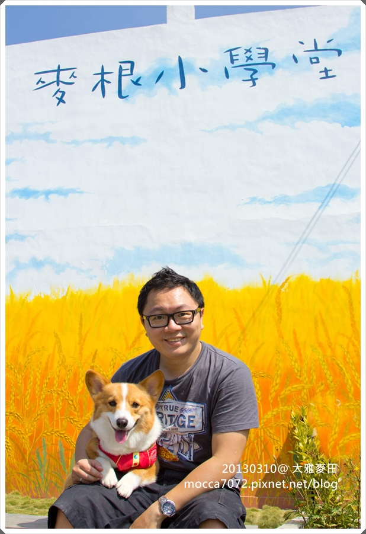
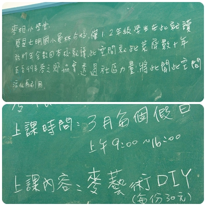
教室外面有販賣冰涼麥茶及農產品
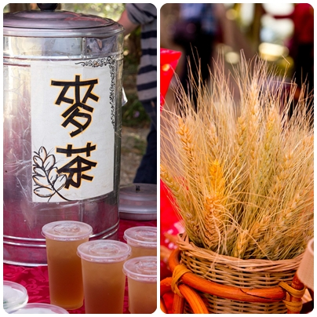
工作中的插秧機
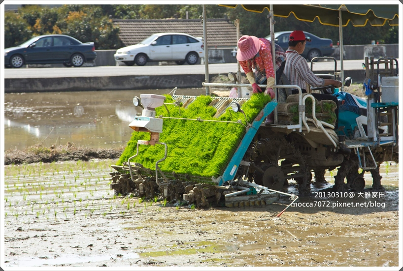
說是大雅麥田文化，但其實這裡並沒有什麼特別的活動規劃，還是我沒看到？
所以除了拍麥田之外完全沒有其他事可做 XD，而且太陽又大也拍不了太久
把拔在拍特寫時，我就帶著卡卡去旁邊樹蔭下休息喝水，中暑就糟了
所以非常不建議只安排這裡當單一景點來玩，會很乾.......XD
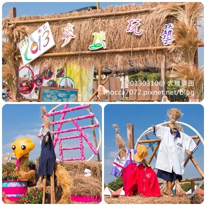
這麼迷人的田園風光，住在台灣真幸福，一年四季都有不同的景色可以拍
希望大家發揮公德心，保留完整的麥田給下一位觀賞者吧！
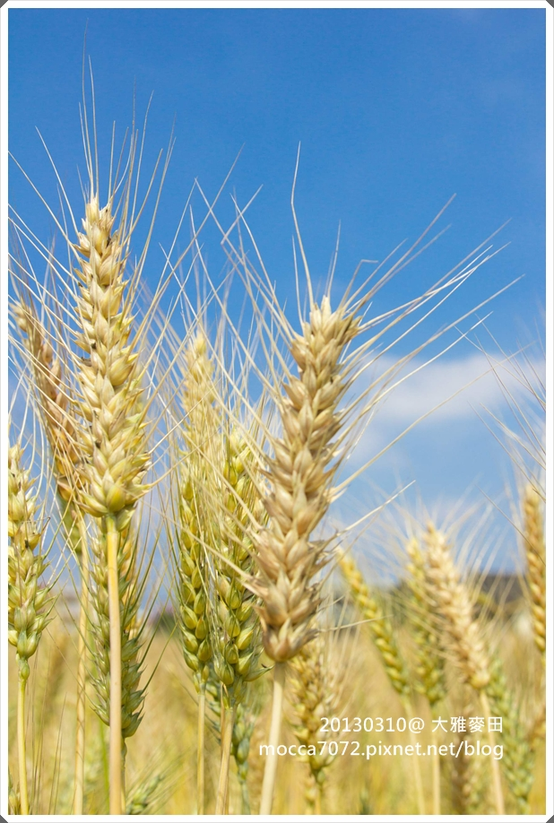
接著我們來到台中市區的一間咖啡廳 JUGGLER CAFE
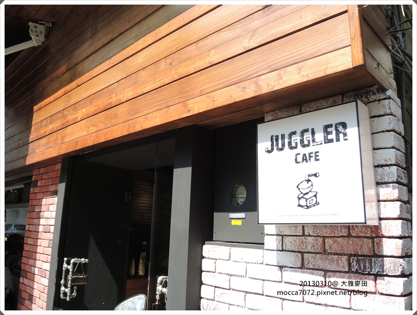
廚房跟櫃台就在進門後的這小塊區域，很小巧！哈
所以大部分餐點也都是輕食為主
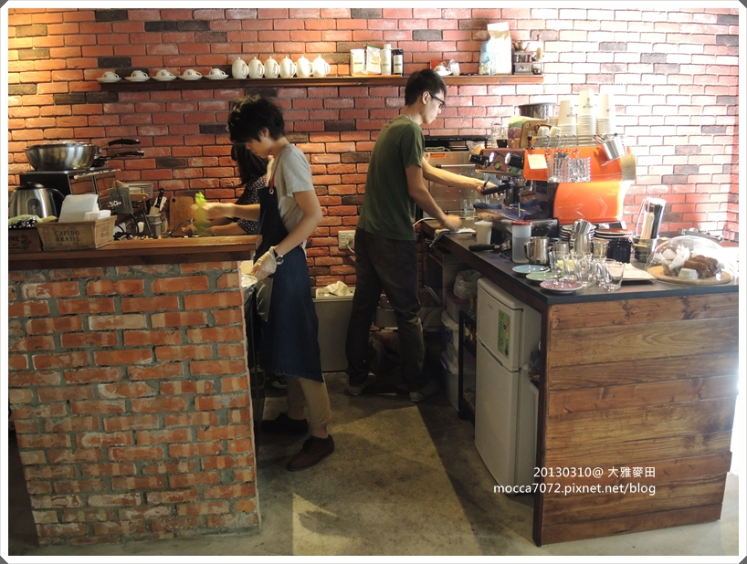
我點了卡門貝爾起司烤蛋＋冰摩卡，猛哥點了青醬培根蛋起司
份量都不大，但對我們來說挺剛好的，而且口味也還不賴
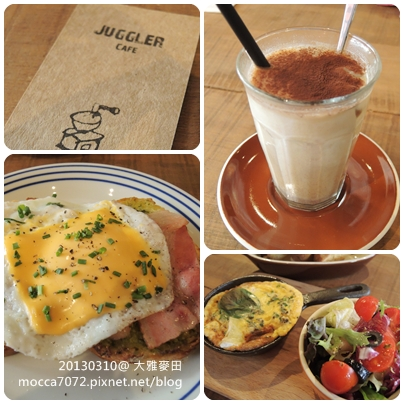
謝謝店家對寵物友善，願意讓小狗一起入內餐
如果要帶寵物請事先告知店家，並遵守應該有的禮貌哦！
Juggler Cafe
地址：台中市華美街498巷4號
電話：04－23283258